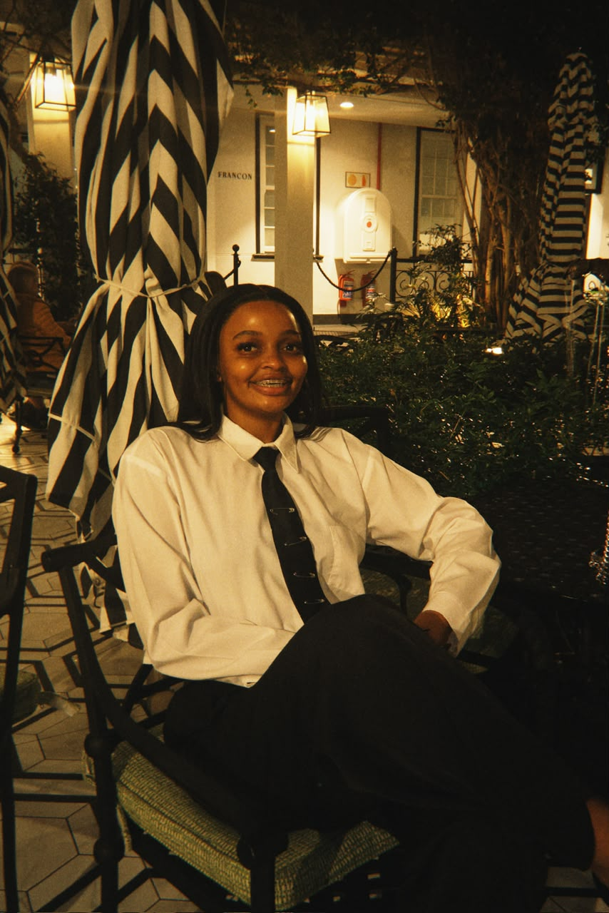

Hi, I'm Ratiloe Lebogang Mbonani
Dedicated ICT student at Cape Peninsula University of Technology (CPUT) with a strong background in full-stack development and digital design. Passionate about building innovative solutions, gaining practical experience, and leveraging technology to deliver meaningful impact.
- Cape Town, Western Cape
- 231006810@mycput.ac.za | 081 288 5205
- LinkedIn | GitHub

Technical skills
Programming languages
- JavaScript
- CSS
- Python
- HTML
- MySQL
- PHP
Frameworks & tools
- Node.js
- React.js
- Vue.js
- Figma
- Adobe Illustrator
- Adobe InDesign
Education
- Cape Peninsula University of Technology (CPUT)
Diploma in Information and Communication Technology (Multimedia)
2024 to present - Ekangala Comprehensive High School
National Senior Certificate
2024
References
Evidence
Watch my mock interview or visit the live portfolio and GitHub repository.
Projects
Twirls & Relove
Twirl & Relove is a React-based website concept for a pre-owned matric dance dress platform that encourages the resale and reuse of formalwear. It connects people looking for affordable occasion dresses with those giving their dresses a second life, exploring a practical, accessible and more sustainable shopping experience.
Tags: React, E-commerce, UI Design
Technologies: React, JavaScript, CSS, Figma
YŪGEN
YŪGEN is a Japanese fine-dining website and web design project inspired by the elegance and simplicity of Japanese dining culture. It creates a refined digital experience through thoughtful typography, visual presentation, structured content and a cohesive aesthetic.
Tags: Web Design, Brand Experience, UX
Technologies: HTML, TailwindCSS, Figma, WordPress
Digital Stacked Brand Guide
Digital Stacked is a branding and multimedia design project focused on developing a consistent visual identity for a technology brand. It explores brand identity, colour systems, typography, visual communication and digital design applications.
Tags: Branding, Adobe Suite, Design System
Technologies: Adobe Illustrator, Adobe InDesign, Brand Strategy
Wombs of Wisdom
Wombs of Wisdom is an AI-powered knowledge platform concept developed during the GirlCode hackathon. It aims to make African women’s intergenerational knowledge more accessible, covering topics such as motherhood, personal care, health awareness, food and nutrition.
Tags: AI, Hackathon, UX Research
Technologies: React, AI Concept, Figma, MySQL
Ratiloe Lebogang Mbonani CV
View CV
Download CV
Reflection
My three reflections from building and publishing my CV, grouped by what I learned.
Documentation: coding my CV in Markdown
My objective was to learn Markdown syntax and apply it to write a professional CV that could be easily updated and shared online. I learned how to use Markdown features such as headings, bullet points, icons, comments and links to organize my CV clearly. I found it easy to learn how to code in Markdown and applied these features to create a well structured document. I successfully created a clean and professional CV that is easy to update and share and this experience helped me understand how GitHub and Markdown work together.
Communication: mock interview experience
I recorded a mock interview to simulate a real-world job interview environment. I needed to present myself professionally, communicate my skills clearly, and confidently respond to a mix of technical, behavioural, situational, and general questions. I prepared by selecting one question from each category and answering each question using the STAR method. I recorded myself six times before getting the right shot, and with each attempt, I improved my responses and body language. Through this process, I became more aware of my communication style, body language, and confidence levels. This experience helped me prepare more effectively for real interviews.
Deployment: using GitHub Pages
I wanted to showcase my CV online in a professional and accessible way using GitHub Pages. My task was to deploy my CV and ensure it displayed correctly as a web page. The challenge I faced while trying to set it up was embedding my mock interview video directly below my CV without redirecting viewer to another site. To solve this challenge, I used HTML code inside my CV README Markdown file and uploaded the video to my repository files. In that way, the video displayed directly below my CV. As a result, I successfully deployed my CV online with the embedded mock interview video. This experience improved my understanding of deployment and presenting content on the web.
Agile Industry Placement
VarsityPath: Agile Project Documentation
As part of my Agile industry placement, I worked on VarsityPath, an AI-supported university-readiness platform designed to help Grade 11 and Grade 12 learners prepare for university. The platform focuses on academic results, study planning, university exploration, eligibility checks and application tracking.
This project helped me explore how Agile principles can be applied to project planning, task organisation, teamwork and software development.
Project period: 4 August 2026 – 4 September 2026
Presentation date: 4 September 2026
Team members
- Ratiloe Mbonani
- Bambanani Liwani
- Siyamthanda Mafuta
- Nelisiwe Makhabane
1. Agile Team Charter
Evidence:
Agile Team Charter (PDF)1. Agile Team Charter Reflection
Creating the Agile Team Charter helped me understand the importance of establishing clear roles, responsibilities, goals, and communication methods before starting a group project. Since VarsityPath involved developing an AI-supported university-readiness platform, it was important for every team member to understand the purpose of the project and how their contribution would support the final product. We identified WhatsApp as a way to share quick updates and Microsoft Teams for formal meetings and collaboration. This helped us establish a communication structure and understand the importance of teamwork. I learned that a successful Agile team needs cooperation, accountability, and a shared understanding of the project goals. One challenge in group work is ensuring that everyone remains informed and completes their responsibilities on time. Overall, the Team Charter provided a foundation for our collaboration and helped us understand that the success of the project depends not only on technical skills but also on communication and commitment.
2. User stories and tasks
Evidence:
User Stories and Tasks (PDF)2. User Stories and Tasks Reflection
Developing user stories helped me understand how to approach software development from the user's perspective rather than focusing only on the technical features. For VarsityPath, we considered the needs of Grade 11 and Grade 12 learners who require support with academic performance, study planning, university exploration, eligibility checks, and application tracking. Breaking these needs into user stories made the platform's purpose clearer and helped us identify the tasks required to deliver each feature. I learned that user stories should explain who the user is, what they want to achieve, and why the feature is valuable. Turning the stories into smaller tasks also made the work easier to organise and assign to team members. A challenge was ensuring that the stories were specific enough to guide development while still focusing on the learner's needs. This process showed me that understanding the target users is essential when designing useful and accessible digital solutions.
3. Product backlog
Evidence:
3. Product Backlog Reflection
Creating the Product Backlog taught me how to organise project requirements into a prioritised list of features and improvements. For VarsityPath, the backlog included features such as academic results management, study planning, university exploration, application tracking, and AI-supported assistance. I learned that not every feature can be developed at the same time, especially when working within a fixed deadline. Prioritising tasks according to user value, importance, and project requirements helps the team focus on the features that contribute most to the product's purpose. The backlog also gave the team a shared reference point for understanding what needed to be completed. One challenge was balancing the number of features we wanted to include with the time available for development and testing. This experience helped me understand that a Product Backlog is not simply a list of ideas; it is a tool for planning, decision-making, and managing changing requirements throughout an Agile project.
4. Sprint backlog
Evidence:
4. Sprint Backlog Reflection
Working with Sprint Backlogs helped me understand how a large project can be divided into smaller, manageable stages. For VarsityPath, our planned sprints covered the project foundation, academic management, university exploration and applications, and finally testing and presentation. This structure helped us organise the work according to the time available between 4 August and 4 September 2026. I learned that each sprint should have a clear goal and a realistic set of tasks that the team can work towards completing. Dividing the project into stages also made it easier to monitor progress and identify work that still required attention. A challenge was making sure that the tasks selected for each sprint were achievable within the allocated period, particularly when development, collaboration, and testing all needed time. Overall, Sprint Backlogs helped me appreciate the value of short-term planning, flexibility, and regular progress checks when developing a software product under a deadline.
5. Agile logbook
Evidence:
Agile Logbook (PDF)5. Agile Logbook Reflection
The Agile Logbook helped me recognise the importance of recording project activities, progress, challenges, and decisions throughout the development process. It provides a record of what the team worked on, what was achieved, and which tasks still required attention. I learned that keeping an accurate logbook makes it easier to reflect on the team's progress and identify areas that need improvement. It also supports accountability because team members can review their responsibilities and understand how their contributions fit into the overall project. One lesson I took from this process is that project documentation should be maintained consistently rather than left until the end. If updates are missed, it becomes more difficult to remember decisions and accurately describe what happened during the project. Overall, the Agile Logbook reinforced the importance of reflection, organisation, and transparency in teamwork. It also showed me that documenting the development journey is valuable because it records not only the final outcome but also the learning that takes place along the way.
Overall
Creating my GitHub portfolio helped me showcase my skills in HTML, CSS, JavaScript, React, and other technologies through projects such as Twirl & Relove and Wombs of Wisdom. Writing my CV in Markdown taught me how to organise my education, technical skills, projects, and achievements professionally. Recording my mock interview helped me identify the importance of confidence, clear communication, and preparation when answering interview questions. Deploying my portfolio with GitHub Pages taught me how to publish my work online, while documenting my VarsityPath Agile placement improved my understanding of user stories, backlogs, sprints, and teamwork. Overall, these activities strengthened my technical and professional skills and helped me identify areas to improve as I prepare for a career in ICT.